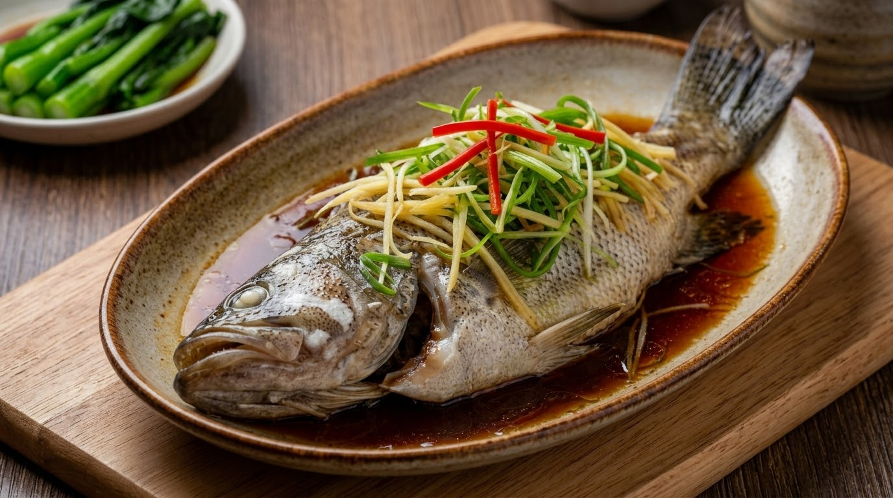
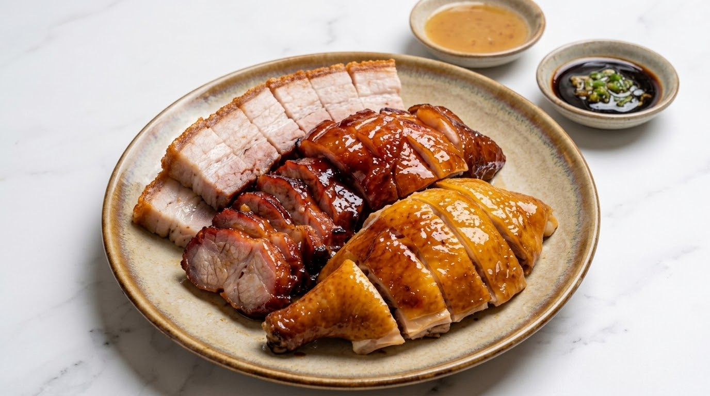
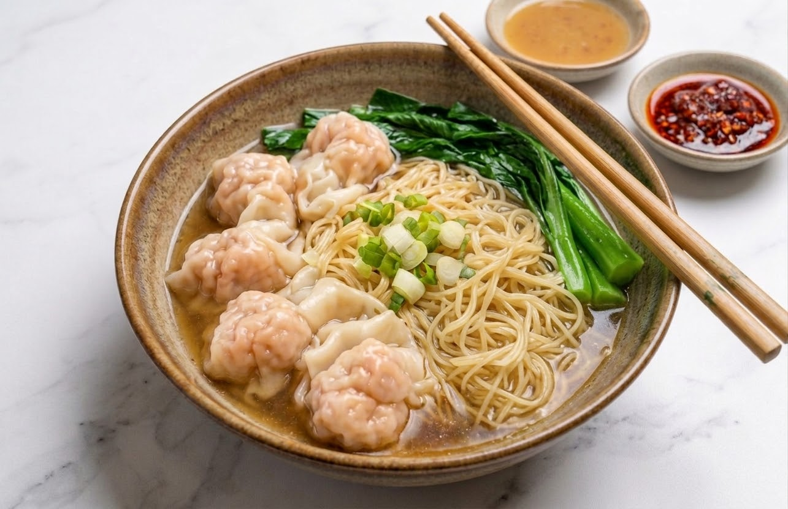
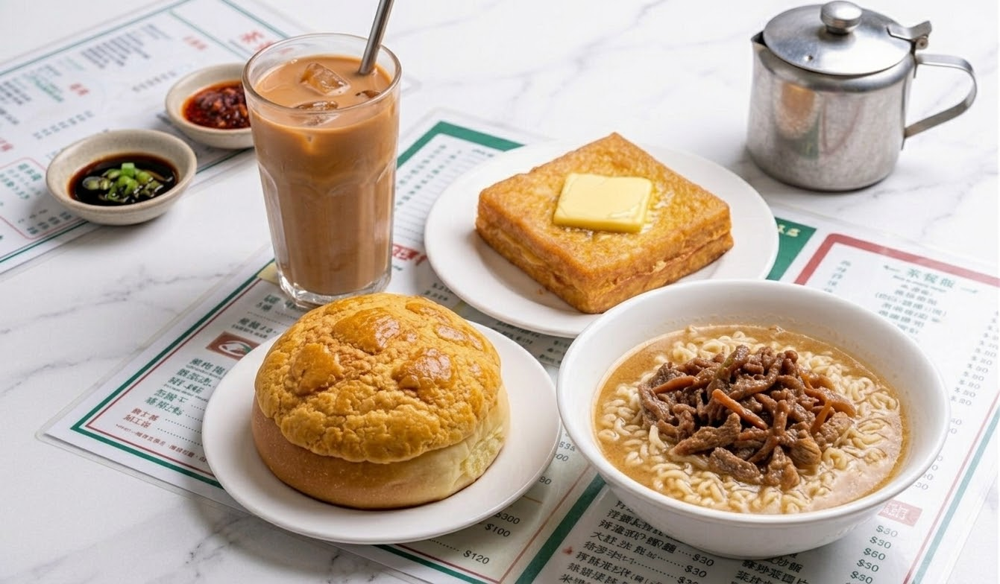
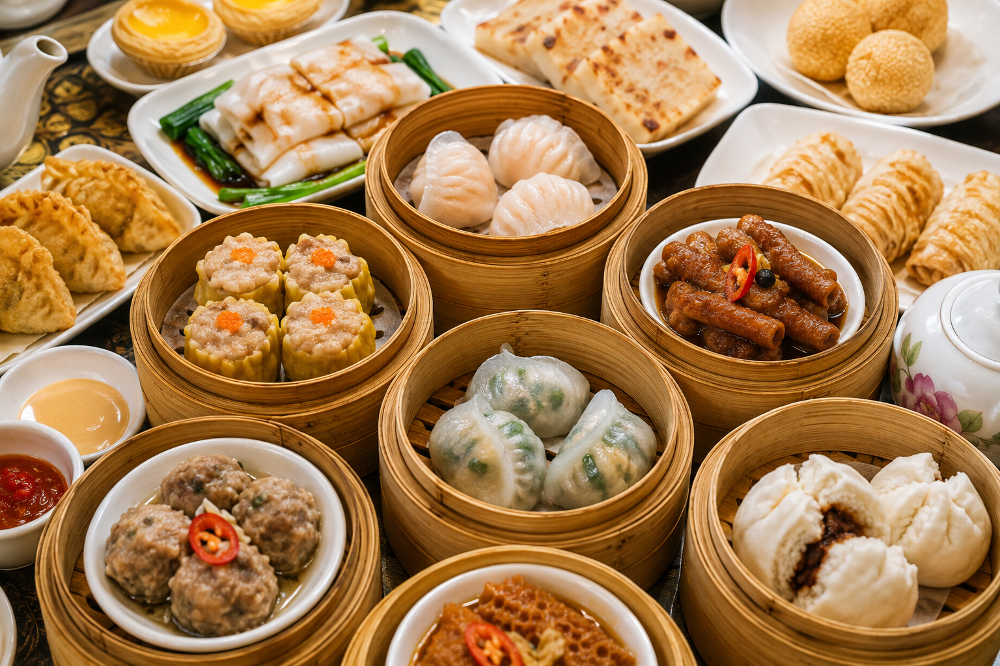
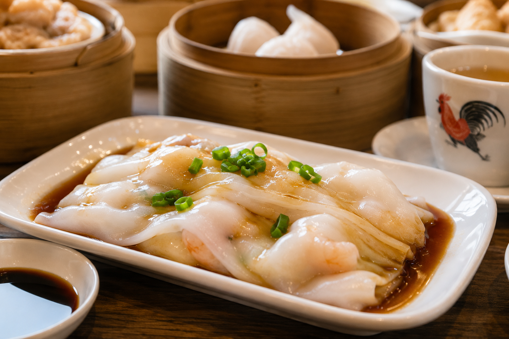
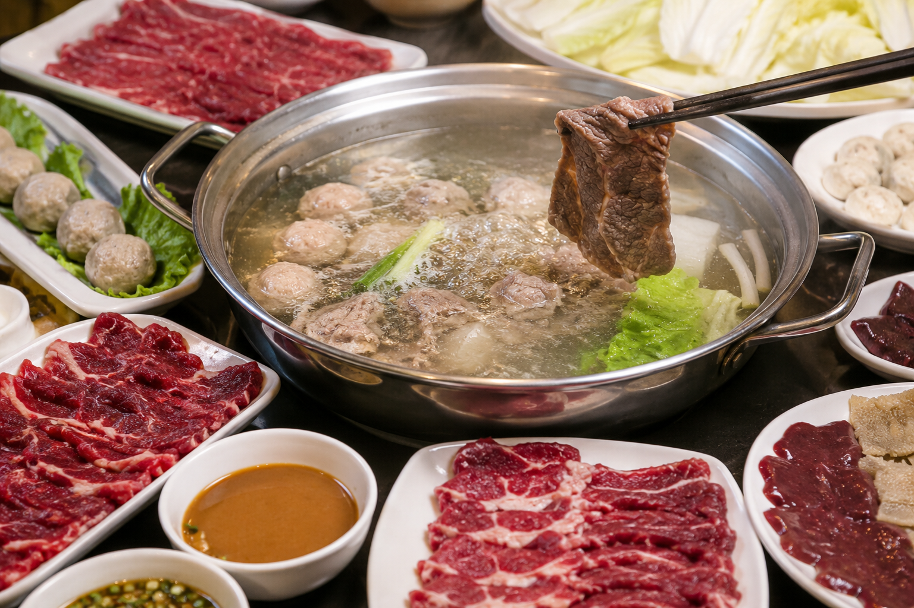
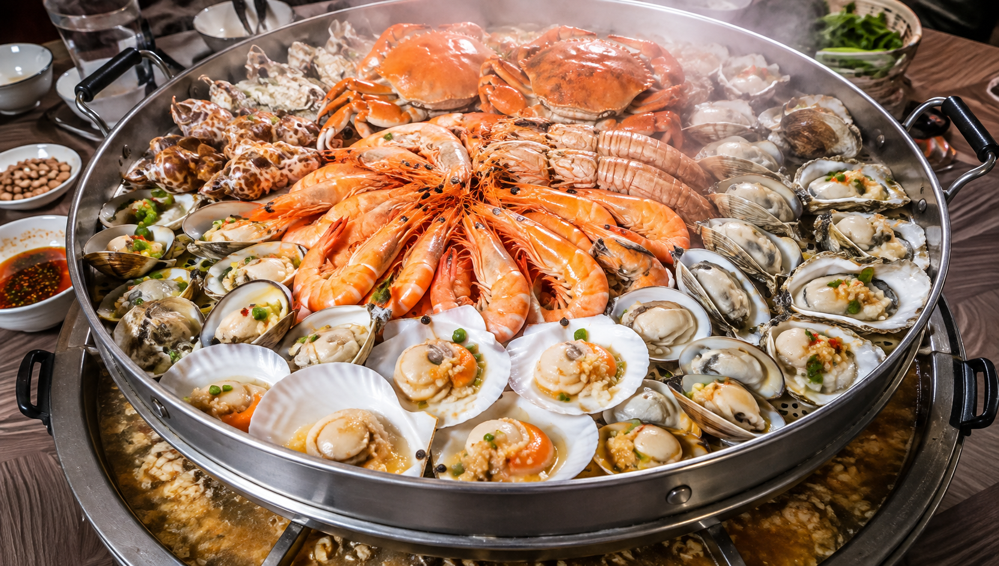

FOOD GUIDE
HONG KONG
WHAT TO EAT

広東料理
蒸し魚や海鮮料理など、素材の味を活かした繊細な広東料理。

焼味 (Siu Mei)
焼鴨や焼豚、白切鶏など、香ばしくジューシーなローカルの味。

香港麺
雲呑麺や蝦子撈麺など、シンプルながら奥深いローカルのソウルフード。

茶餐廳
香港らしいミルクティーや菠蘿包、エッグタルトは外せない定番。
RECOMMENDED RESTAURANTS
ICONIC / 一度は行きたい
MOTT 32
モダンチャイニーズの代表格。洗練された空間で特別な時間を。
📍 中環
CLASSIC / 香港らしさを感じる
Australia Dairy Company
ローカルに愛される茶餐廳の名店。ふわふわスクランブルエッグが名物。
📍 佐敦
NOODLE / 麺を楽しむなら
Lau Sum Kee
雲呑麺の名店。スープと麺のバランスが絶妙。
📍 中環
FINE DINING / きちんとした広東料理
香宮 (Shang Palace)
格式ある広東料理の名店。接待や特別な食事におすすめ。
📍 中環 (シャングリ・ラ ホテル内)
SHENZHEN
WHAT TO EAT

飲茶
本格的な点心を朝から楽しもう。ハーガオや焼売も定番。

腸粉
つるっとした食感がクセになる、ツルツルの米粉生地が魅力。

潮州料理
素材の味を活かした潮州の繊細な味付けや牛肉火鍋を堪能。

海鮮料理
生簀から好きな海鮮を選んで調理する深圳スタイルの醍醐味！
RECOMMENDED RESTAURANTS
飲茶・点心
• 點都德 (Dian Dou De)
ローカルに大人気の飲茶チェーン（福田 / 羅湖エリアなど）
• 皇庭広場酒家
老舗の飲茶レストラン
広東・潮州料理
• 潮汕牛肉火鍋 (八合里)
新鮮な牛肉と手作りの味（南山 / 福田エリアなど）
• 客語客家菜
客家料理の名店
海鮮料理
• 春風海鮮酒家
生簀海鮮が人気の有名店（南山エリア / 蛇口など）
• 漁語海鮮姿造
新鮮な海鮮をシンプルに
LOCAL TIP
- お店の入口の生簀で海鮮を選ぶのが深圳スタイル！
- 海鮮は「清蒸（蒸し）」「椒塩（塩コショウ）」「蒜蓉（ニンニク蒸し）」がおすすめ。
- 腸粉は醤油ベースのタレでどうぞ。
- 飲茶は混雑することが多いので、早めの時間がおすすめ。
PLAN MEMO
行きたいお店や食べたいものを自由にメモしておこう。